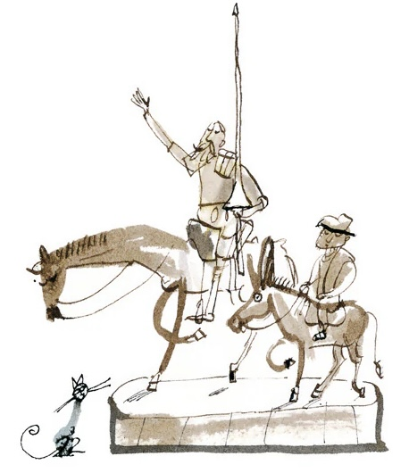

Primera parte - Capítulo III
5. Don Quijote se arma caballero
Después de tener algunos encontronazos con los arrieros que estaban en la venta, don Quijote fue armado caballero precipitadamente por el ventero.
Advertido y medroso desto el castellano, trujo luego un libro donde asentaba la paja y cebada que daba a los arrieros, y con un cabo de vela que le traía un muchacho, y con las dos ya dichas doncellas, se vino adonde don Quijote estaba, al cual mandó hincar de rodillas; y, leyendo en su manual, como que decía alguna devota oración, en mitad de la leyenda alzó la mano y diole sobre el cuello un buen golpe, y tras él, con su mesma espada, un gentil espaldarazo, siempre murmurando entre dientes, como que rezaba. Hecho esto, mandó a una de aquellas damas que le ciñese la espada, la cual lo hizo con mucha desenvoltura y discreción, porque no fue menester poca para no reventar de risa a cada punto de las ceremonias; pero las proezas que ya habían visto del novel caballero les tenía la risa a raya.